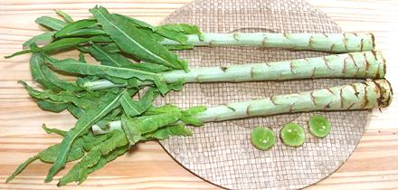
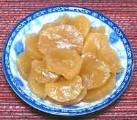

Stem Lettuce

[Celtuce, Celery Lettuce, Asparagus Lettuce, Chinese Lettuce; Wosun,
Woju (China); Lactuca sativa var asparagina alt var
augustana, var angustata]
This lettuce is grown mainly for its stem, which is peeled and sliced
or diced and used in stir fries. It is also often pickled. The flavor
is fairly mild, much like a slightly bitter cucumber, so it's usually
paired with stronger flavored items. The photo specimens were about
17 inches long (not counting leaves), 1.6 inches diameter and weighed
about 8 ounces each. The form shown with a crown of leaves is how it
is generally sold, but you'll notice the tip with the young more
tender leaves has been removed. It is sold separately as A-Choy. The
older leaves still attached are like Romaine leaves but tougher and
more bitter, but they do stand up better to cooking. The Chinese do
not eat raw greens for reasons you'd probably rather not dwell on.
More on Lettuce & Chicory

Stem lettuce is lightly flavored, so is as much a textural element as
a flavor element. Because of its crispness, even with fairly long cooking,
you will want to use it in fairly thin slices or smallish dice.
The photo to the left shows pickled stem lettuce, very common in Asian
markets. It is pleasantly light and lightly crunchy, very easy to eat a
whole jar at one sitting. Ingred: lettuce, sugar, soy sauce, water, msg.
Buying:
Stem Lettuce can be found in most Asian produce
markets, but tends to be seasonal. It's in good supply in late spring
and early summer, spotty the rest of the year.
Storing:
Loosely wrapped in plastic, and not wet, it
should last up to two weeks in the fridge. The leaves may wither, but
they're not the part you use.
Prep:
Stem Lettuce has a very tough outer layer which
must be removed. Use a regular swivel vegetable peeler (I strongly
prefer the "Y" shaped form). The tough layer is lighter in color so you
can usually see if it is sufficiently peeled or not. Otherwise test with
a fingernail which should pierce the flesh easily. Note that the pithy
white core in the high part of the stem does not ever become tender
enough to chew, but has little substance. Remove it if practical, but
if not it's small and easy to just swallow.
Cooking:
Slices and cubes of stem lettuce are still
"crisp tender" at 20 minutes of cooking. Depending on the texture you
want, you may want to simmer them a bit before adding to a quickly
cooked stir fry.
dy_stemletz* 120603 - www.clovegarden.com
©Andrew Grygus - agryg@clovegarden.com - Photos
on this page not otherwise credited © cg1
- Linking to and non-commercial use of this page permitted